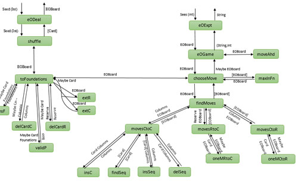
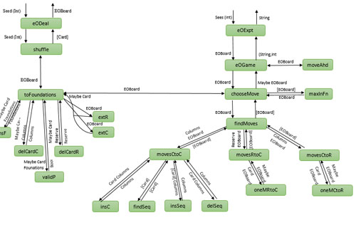

Hang on a second ...
Hang on a second ...


My 2nd Year Projects

Technology used: UML 2.0, Microsoft Office
Technologies used: Microsoft Office, Google Scholar

Technology used: Java, JDBC Connector (SqLite3)


Technology used: Java
 

Technology used: Haskell

Technology used: Python
Technology used: Ruby on Rails, Gems (devise, capistrano, rspec, hirb, sqlite3)

Technologies used: Java and Mindstorm EV3 Lego Robots

Technology used: Python, Microsoft Office, Google Scholar